Nyisd meg a Stripe regisztrációs oldalt
A böngészőben navigálj a következő címre:
https://dashboard.stripe.com/register
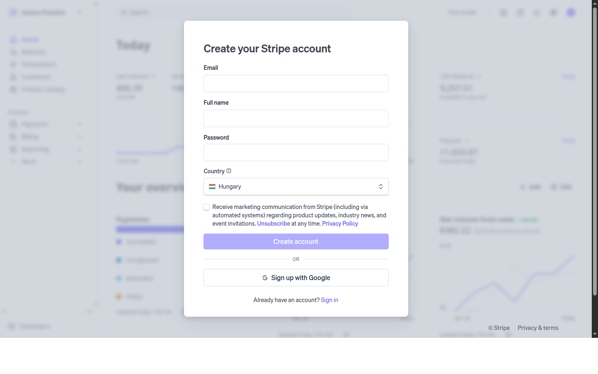
Töltsd ki a regisztrációs adatokat
Az alábbi mezőket kell kitölteni:
- Email address — a vállalkozáshoz tartozó e-mail cím
- Full name — a teljes neved
- Country — Hungary (automatikusan kitöltve, ha Magyarországról töltöd be)
- Password — minimum 8 karakter
Kattints a "Create account" gombra
Az adatok kitöltése után kattints a kék Create account gombra. Alternatívaként használhatod a Sign up with Google opciót is, ha Gmail fiókot szeretnél használni — ez esetben jelszót nem kell megadni.
Stripe küld egy e-mail megerősítő üzenetet a megadott e-mail címre.
E-mail megerősítés
A rendszer felkér az e-mail cím megerősítésére. Kattints az „Open Gmail" gombra (vagy nyisd meg a leveleződet), és keresd a Stripe levelet — abban kattints a megerősítő linkre.
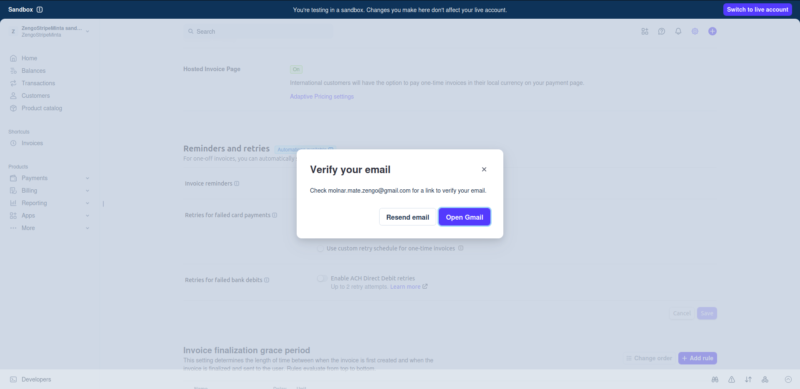
Vállalkozás neve és országa
Az e-mail megerősítés után a Stripe egy rövid beállítási varázslót indít. Az első lépésben add meg:
- Business name — a vállalkozásod neve (pl. PetBazar)
- Business location — válaszd: Hungary
Ezután kattints a Continue gombra.
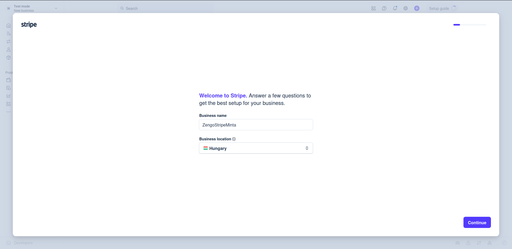
Weboldal és tevékenység leírása
A következő képernyőn a Stripe jobban meg szeretné ismerni a vállalkozásodat:
- Business website — add meg:
https://petbazar.hu - What type of business are you and what do you offer? — írj egy rövid leírást, pl. „Táp árusítás állatok részére" vagy „Kisállat-felszerelések és eledel online értékesítése"
Kattints a Continue gombra.
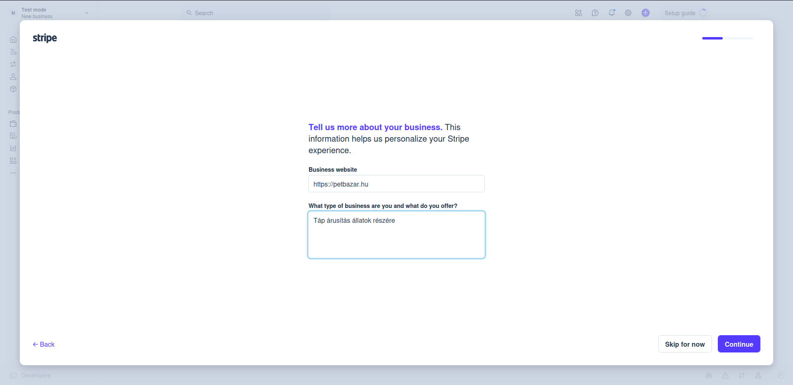
Stripe ajánlása: egyszeri fizetések
A megadott adatok alapján a Stripe automatikusan ajánlja a legjobb fizetési megoldást. Webshop esetén ez a Non-recurring payments (egyszeri, nem ismétlődő fizetések) lesz — ez pontosan az, amire szükség van.
Kattints a Continue gombra.
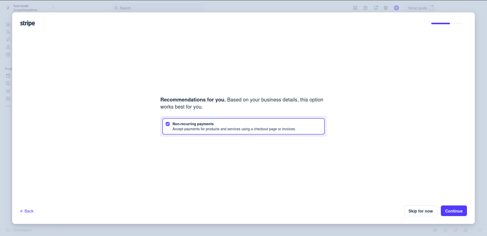
Egyéb funkciók (opcionális)
A Stripe megkérdezi, szeretnél-e más funkciókat is használni. A webshop alapbeállításához elegendő a Non-recurring payments bejelölve hagyása. A többi opciót most kihagyhatod — bármikor bekapcsolható később.
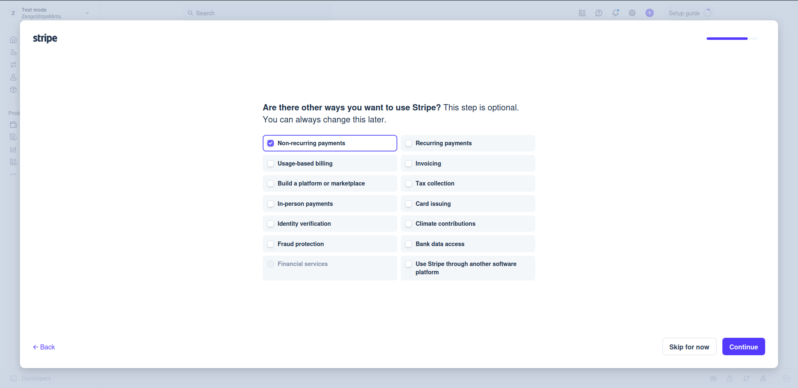
Sandbox (tesztkörnyezet) bevezető
A varázslat végén a Stripe bemutatja a Sandbox (tesztkörnyezet) koncepcióját. Ez egy biztonságos tesztelési felület — itt valódi pénz nem mozog. Az éles fizetések fogadásához később kell „live" módra váltani.
Kattints a Go to sandbox gombra.
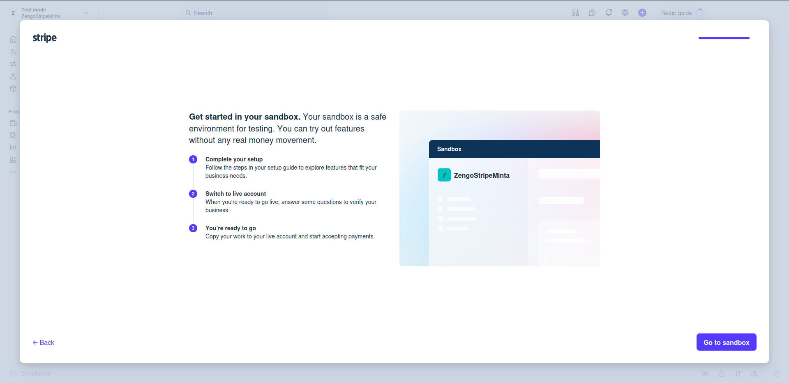
A Dashboard főoldala
A Stripe vezérlőpultja (Dashboard) itt található: dashboard.stripe.com
Amit érdemes megismerni:
- Sandbox / Live mód — a bal felső sarokban váltható; tesztelni mindig Sandbox módban
- HUF balance — az egyenleg forintban jelenik meg
- Payouts — a bankszámlára való kifizetések
- API keys — a jobb oldalsávban láthatók a kulcsok (WooCommerce integrációhoz szükséges)
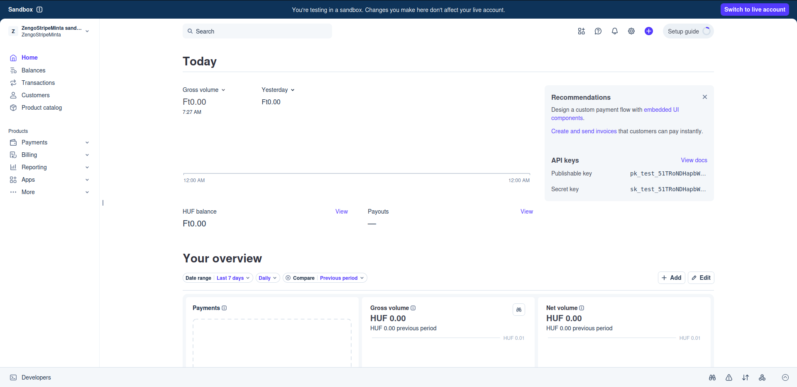
Fizetési mód beállítása (Setup guide)
A Dashboard jobb oldalán megjelenik a Setup guide panel. Ez végigvezet a legfontosabb beállításokon. Az első lépés: „Choose how to accept payments" — itt megadhatod, milyen módon szeretnél fizetést fogadni (pl. checkout oldal, fizetési link).
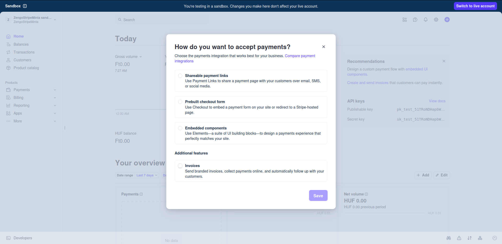
Váltás Live módra
Amikor készen állsz az éles fizetések fogadására, kattints a Dashboard jobb felső sarkában lévő „Switch to live account" gombra. Ez elindítja az aktiválási varázslót.
Vállalkozás típusa és helyszíne
Az aktiválás első lépése: add meg a vállalkozás típusát.
- Business location — Hungary
- Business type — válaszd a megfelelőt:
- Korlátolt felelősségű egyéni cég / Egyéni vállalkozó — ha egyéni vállalkozóként működsz
- Korlátolt felelősségű társaság (Kft.) — ha céged van
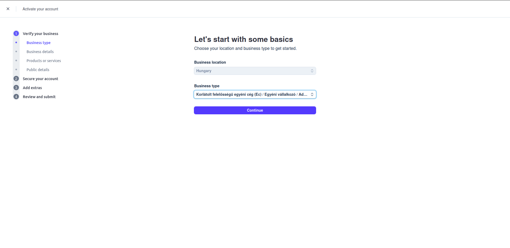
Személyes adatok megadása
Add meg a saját személyes adataidat (nem a vállalkozásét):
- Legal name — teljes jogi neved, ahogy az okmányon szerepel
- Email address — előre kitöltve a regisztrációs e-maillel
- Date of birth — születési dátum (MM/DD/YYYY formátumban)
- Home address — magyarországi lakcím (város, utca, irányítószám)
- Phone number — magyar telefonszám (+36 előhívóval)
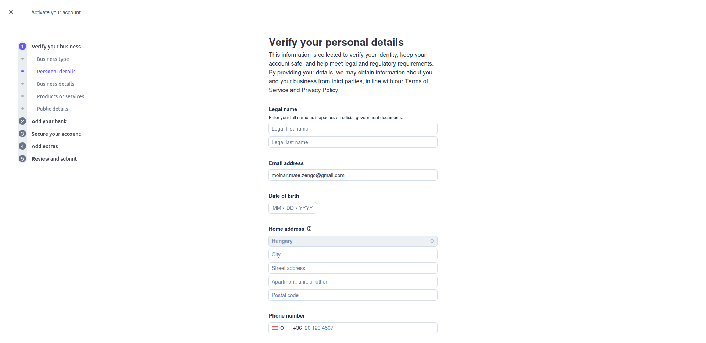
Termékek és szolgáltatások
Ebben a lépésben meg kell adni, mit árulsz a Stripe-on keresztül:
- Category — válaszd a legmegfelelőbbet, pl. Retail vagy Pet stores
- Description — rövid leírás, pl. „Kisállat-eledelek és felszerelések online értékesítése"
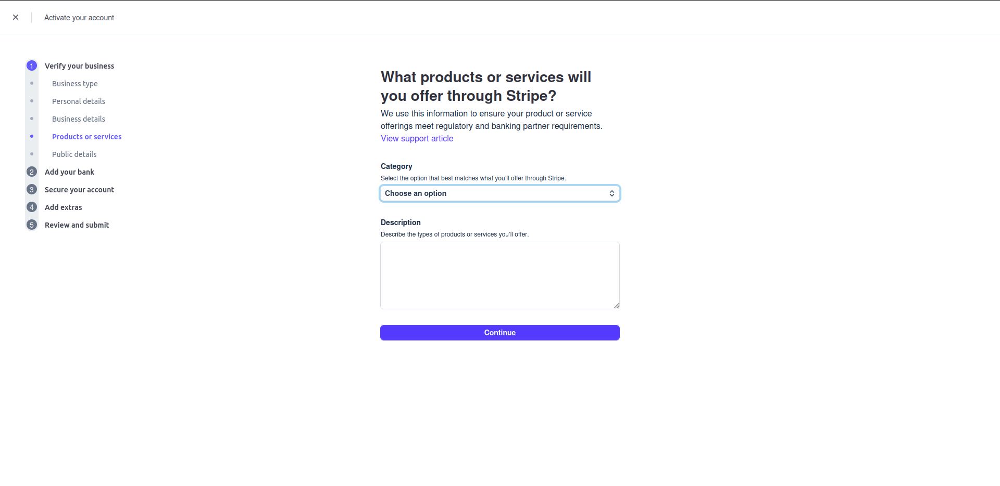
Nyilvános adatok (Statement descriptor)
Ezek az adatok megjelenhetnek az ügyfelek bankkivonatán és számláin:
- Statement descriptor — max. 22 karakter, pl. PETBAZAR — ez jelenik meg az ügyfelek bankszámlakivonatán
- Customer support phone number — ügyfélszolgálati telefonszám
- Customer support email / website — opcionálisan
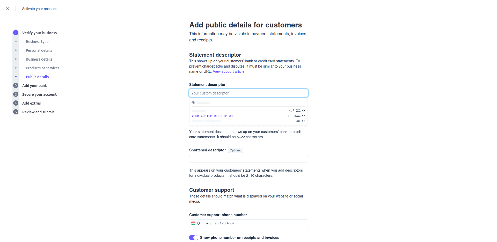
Bankszámla hozzáadása (kifizetésekhez)
Add meg azt a bankszámlát, amelyre a Stripe a bevételeket utalja:
- Currency — HUF – Hungarian Forint (automatikusan kitöltve)
- IBAN — a vállalkozói bankszámla IBAN száma (HU42... kezdetű, 28 karakter)
- Confirm IBAN — add meg mégegyszer ellenőrzésként
- Payout schedule — válaszd: Manual (manuálisan utalsz magadnak) vagy Automatic every week
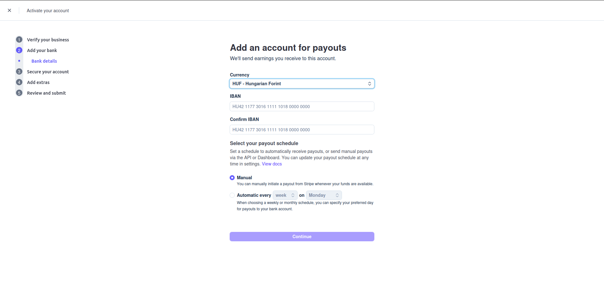
Kétlépéses azonosítás (2FA)
A Stripe kötelezővé teszi a kétlépéses azonosítást a fiók biztonsága érdekében. Két lehetőség:
- Add security key — fizikai biztonsági kulcs (pl. YubiKey) — legbiztonságosabb
- Add authenticator app — hitelesítő alkalmazás (pl. Google Authenticator, Authy) — ajánlott
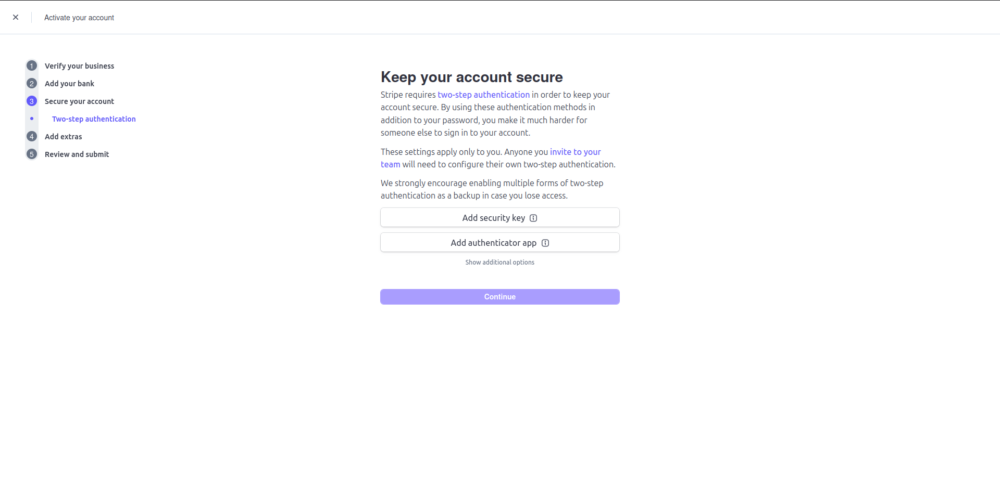
Adókezelés — opcionális
A Stripe felajánlja az automatikus adóbevallás-segítést. Ez egy opcionális funkció — a PetBazar esetén egyelőre kihagyható (kattints: Skip for now).
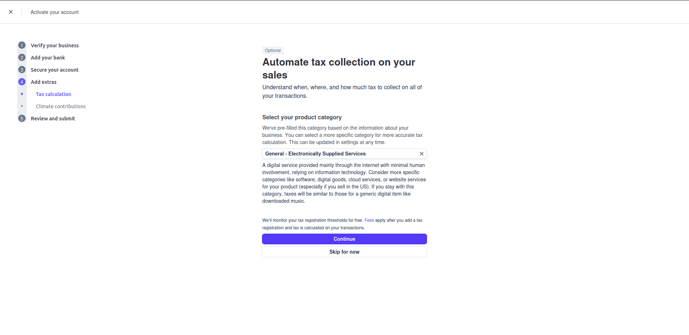
Klíma hozzájárulás — opcionális
A Stripe lehetőséget ad arra, hogy a bevétel egy kis hányadát (0,5%–1,5%) szén-megkötési projektekre fordítsd. Ez teljes mértékben opcionális és kihagyható.
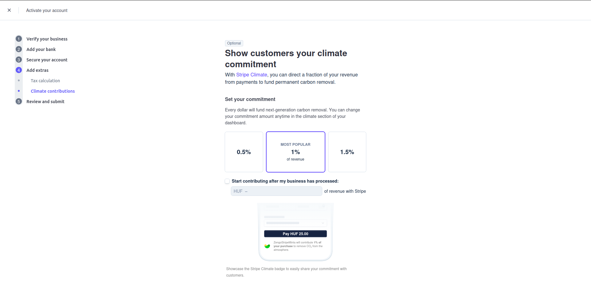
Összefoglalás és beküldés
Az utolsó lépésben a Stripe összefoglalja az összes megadott adatot. Ellenőrizd, hogy minden adat helyes, majd kattints a Submit gombra.
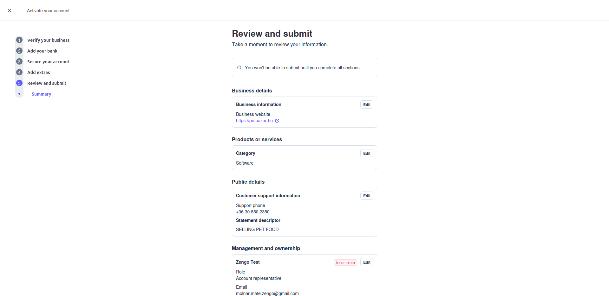
API kulcsok megszerzése
A WooCommerce integrációhoz szükség van a Stripe API kulcsokra. A Dashboard főoldalán a API keys szekcióban láthatók, vagy megtalálhatók itt:
Developers → API keys
- Publishable key —
pk_live_...— nyilvános kulcs - Secret key —
sk_live_...— titkos kulcs
Stripe megkeresése a WooCommerce fizetési módok között
A WordPress adminon navigálj ide: WooCommerce → Beállítások → Fizetési módok
Az oldalon görgess le a „További fizetési lehetőségek" szekcióhoz — ott találod a Stripe sort. Kattints a Beállítás módosítása gombra.
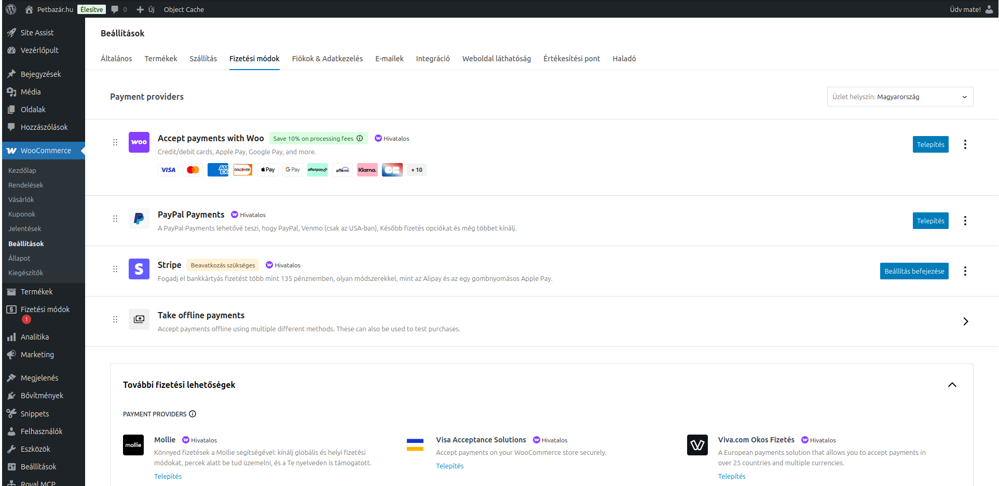
Stripe fiók összekapcsolása
A Stripe beállítási oldalán a plugin bemutatja a WooCommerce ↔ Stripe integrációt. Kattints a kék „Hozzon létre vagy csatlakozzon egy fiókot" gombra.
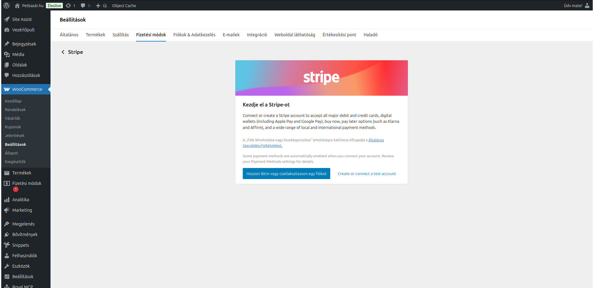
Bejelentkezés a Stripe fiókba
A WooCommerce átirányít a Stripe OAuth kapcsolódási oldalára. Add meg a Stripe fiókhoz tartozó e-mail címet, majd kattints a Continue gombra. Ezt követően add meg a jelszót.
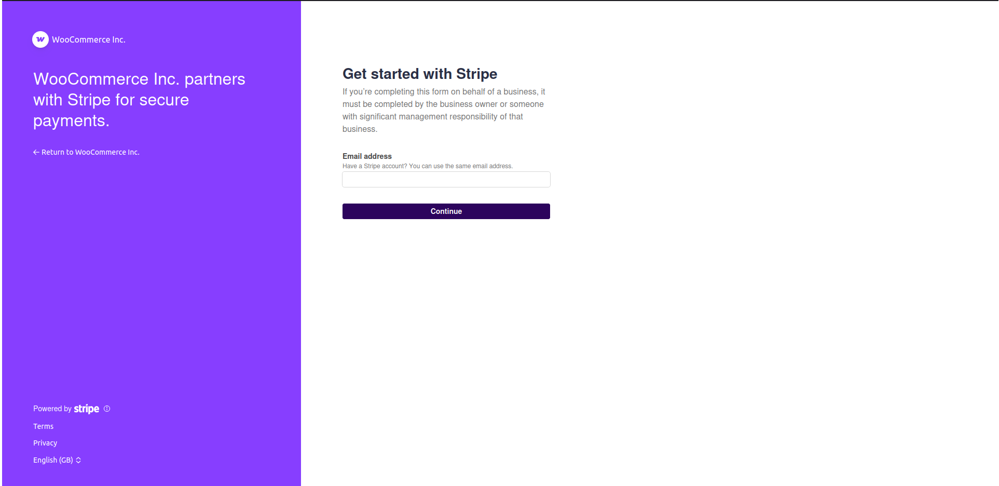
✅ Ellenőrzőlista — minden kész?
4242 4242 4242 4242 — bármilyen jövőbeli lejárati dátum, bármilyen CVC. Sandbox módban valódi pénzmozgás nélkül tesztelhető a fizetési folyamat.